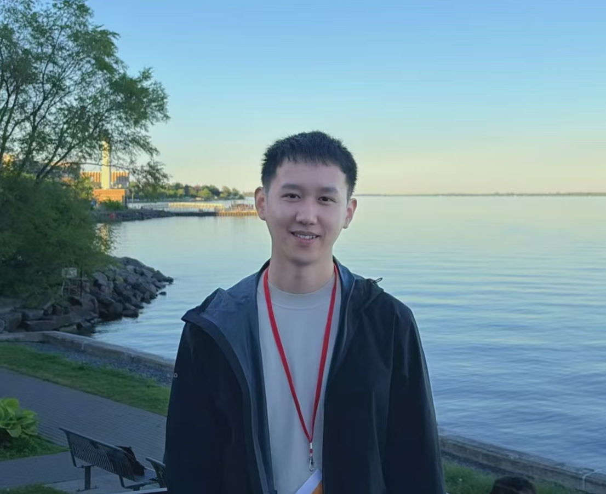

Weiquan Wang
Postdoctoral Research Fellow (Operations Research)
About
Weiquan Wang is currently a Postdoctoral Research Fellow at Université Laval and a member of the Smart & Sustainable Transportation Lab (SSTL). His research focuses on transportation optimization, electric vehicle routing problem, and network design problem. His work integrates operations research, mathematical programming, and optimization algorithms to address emerging challenges in sustainable transportation and energy systems. His recent studies have concentrated on electric vehicle routing problems, charging infrastructure planning, charging station location, and resilient transportation network design.
Research Interests
- Electric Vehicle Routing Problems (E-VRP)
- Charging Station Location Problems
- Transportation Network Design
- Bilevel Optimization
- Mathematical Programming
- Exact and Heuristic Optimization Algorithms
- Operations Research Applications in Transportation